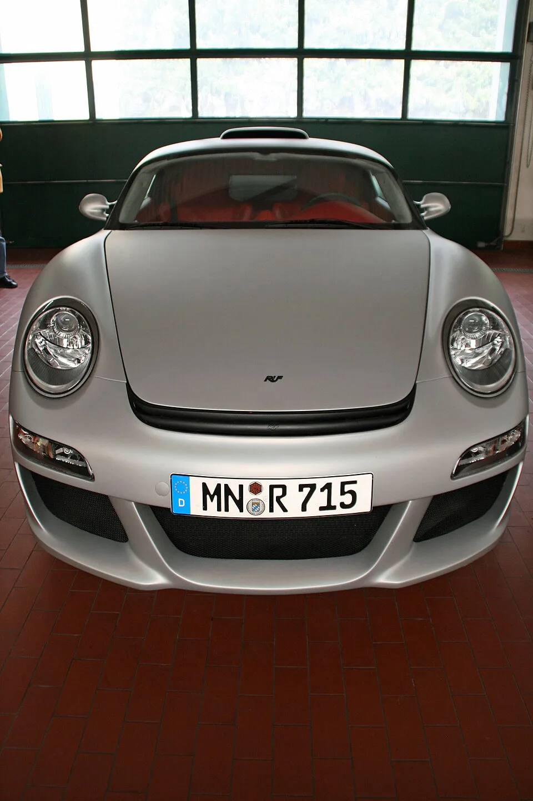
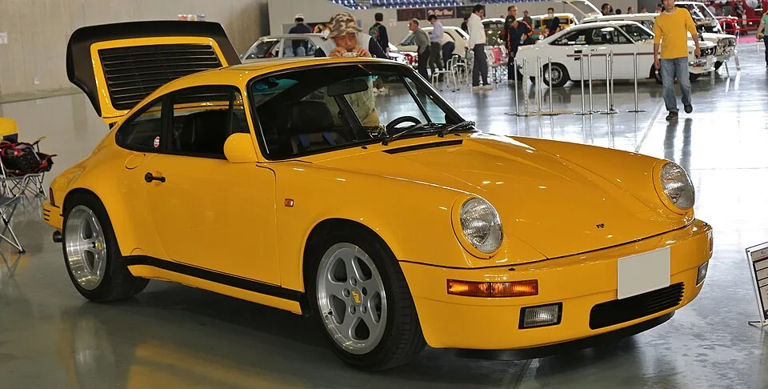
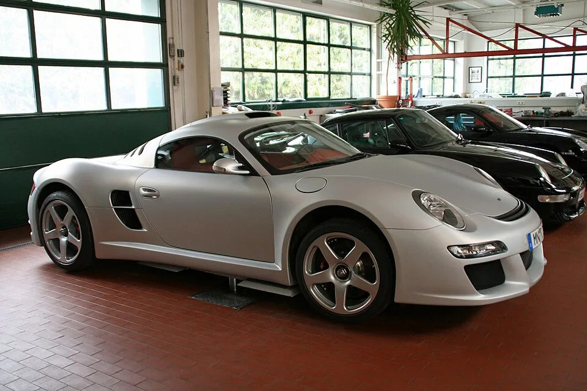
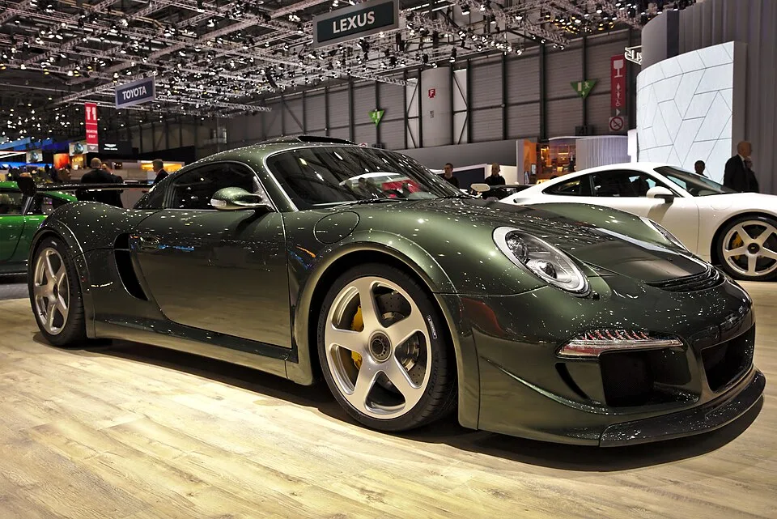

▲ RUF CTR3. 신형 B8 엔진이 탑재된 개발 뮬 '에어프로버'는 이 CTR3의 휠베이스를 100mm 늘린 파생형이다 ⓒ Wikimedia Commons
독일 자동차 제조사 RUF(루프)가 포르쉐 부품을 전혀 쓰지 않은 완전 자체 개발 엔진, 4.8리터 트윈터보 플랫8(수평대향 8기통) ‘B8’을 공개했다. 하이브리드나 전기모터의 도움 없이 순수 내연기관만으로 1,000마력을 넘긴다. 미국 자동차 매체 CarBuzz는 이 엔진을 두고 “RUF의 1,000마력 트윈터보 플랫8이 포르쉐 박서-식스의 한계를 증명한다”고 평했다. 포르쉐를 상징하는 플랫6(수평대향 6기통) 엔진이 700마력대에서 물리적 한계에 부딪히는 사이, RUF는 실린더를 아예 2개 늘리는 정공법을 택했다.
1. RUF, 포르쉐 ‘튜너’가 아니라 ‘제조사’다

▲ 1987년 시속 339km를 기록하며 당대 최고속 양산차 타이틀을 가져간 RUF CTR, 일명 ‘옐로버드’ ⓒ Wikimedia Commons
RUF는 흔히 “포르쉐를 튜닝하는 회사”로 알려져 있지만, 정확히는 그렇지 않다. 1981년 독일 연방자동차청(KBA)으로부터 정식 ‘완성차 제조사’ 지위를 인정받았고, 이때부터 RUF가 손댄 차는 포르쉐가 아니라 고유의 차대번호(VIN)와 형식승인을 받는 RUF 소속 차량이 됐다. 1987년작 CTR ‘옐로버드(Yellowbird)’는 911 카레라 3.2를 베이스로 삼았지만 차체 대부분을 새로 만들어, 당시 양산차 최고속 기록인 시속 339km(211마일)를 세우며 RUF를 전설로 만들었다. 이후 CTR2, 2017년형 신형 CTR, 그리고 2020년대의 미드십 슈퍼카 CTR3까지, RUF는 “포르쉐를 베이스로 하되 자체 섀시·자체 파워트레인을 얹는” 독립 제조사로 진화해왔다. 이번 B8 엔진은 그 진화의 정점으로, RUF가 처음으로 ‘엔진 그 자체’까지 완전 자체 설계했다는 점에서 의미가 남다르다.
2. 왜 실린더를 늘렸나 — “부스트 대신 배기량”
CarBuzz는 RUF의 선택을 “고성능 박서 엔진에서 700마력 이상을 뽑아내는 일은 점점 더 어려워지고 있다”는 문장으로 설명한다. 포르쉐가 최신 911 터보 S의 3.6리터 플랫6에 전기모터 어시스턴스까지 더해 겨우 701마력에 도달한 것이 단적인 예다. RUF는 이 딜레마 앞에서 두 갈래 길 중 하나를 골라야 했다. 더 공격적인 터보 부스트로 밀어붙이거나, 아예 연소실 자체를 늘리거나. RUF는 후자를 택했다. CarBuzz의 표현을 빌리면 “RUF는 실린더를 더하는 비관습적인 길을 택했다… 이는 점점 더 공격적인 부스트 압력에만 의존하는 대신, 근본적으로 더 큰 내연기관을 통해 네 자릿수 출력을 추구할 수 있게 해준다”는 것이다. 뱅크당 실린더 수를 3개에서 4개로 늘려 흡배기 용량을 키우고, 8개 피스톤에 부하를 분산시켜 극단적인 부스트 압력 없이도 큰 출력을 낼 수 있다는 계산이다. 참고로 포르쉐가 양산차에 플랫8을 얹은 적은 단 한 번, 1970년대 914/8 프로토타입뿐이었고 이마저 양산으로 이어지지 못했다. 도로용 플랫8 자체가 반세기 만에 처음 등장하는 셈이다.
3. B8 엔진 스펙 — 1,000마력, 수동변속기

▲ B8 엔진이 탑재된 개발 뮬은 CTR3의 미드십 레이아웃과 멀티매틱제 튜뷸러 스틸 리어 섀시를 기반으로 한다 ⓒ Wikimedia Commons
| 항목 | RUF B8 (플랫8) | 포르쉐 911 터보 S (플랫6) |
|---|---|---|
| 배기량 | 4.8리터 | 3.6리터 |
| 실린더 배열 | 수평대향 8기통 | 수평대향 6기통 |
| 과급 | 트윈터보(전기 어시스턴스 없음) | 트윈터보 + 전기모터 보조 |
| 최고출력 | 1,000마력 이상 | 701마력 |
| 최대토크 | 약 1,000Nm(738lb-ft) | - |
| 변속기 | 자체 개발 6단 수동 | 8단 PDK(자동) |
B8은 내부적으로 ‘에어프로버(Erprober, 독일어로 ‘테스터’)’라 불리는 개발 뮬에 얹혀 처음 세상에 모습을 드러냈다. 순정 CTR3의 휠베이스를 100mm 늘려 새 엔진을 욱여넣었고, 멀티매틱이 제작한 튜뷸러 스틸 리어 섀시에 포르쉐 911의 프런트 구조를 개조해 결합했다. 차체는 전설의 옐로버드를 오마주한 ‘블로섬 옐로(Blossom Yellow)’ 도장을 입었다. 가장 눈에 띄는 대목은 변속기다. 1,000마력, 738lb-ft 토크를 감당하는데도 자동변속기가 아닌 자체 개발 6단 수동변속기를 물렸다. CarBuzz는 이를 “거의 반항적일 만큼 전통적인” 선택이라 표현했다. 크랭크케이스는 중력주조 알루미늄으로 제작됐으며, 포르쉐 부품을 개조한 것이 아니라 처음부터 RUF가 그린 새 설계도로 만들어졌다는 점이 강조된다.
4. 굿우드에서의 데뷔, 그리고 ‘아직은 프로토타입’

▲ 모터쇼에 전시된 CTR3. RUF는 이 미드십 슈퍼카 플랫폼을 신형 B8 엔진의 시험대로 삼았다 ⓒ Wikimedia Commons
B8을 얹은 에어프로버는 2026 굿우드 페스티벌 오브 스피드에서 대중에 처음 공개됐고, 굿우드 힐클라임 코스에서 시동을 걸며 관중 앞에 모습을 드러냈다. 다만 CarBuzz는 “B8은 현재 양산 파워트레인이 아니라 개발용 엔진”이라고 못박는다. 지금 단계는 내구성과 주행성 테스트를 통해 RUF 미래 모델을 위한 기술을 검증하는 과정이라는 것이다. RUF 측도 이 엔진이 “향후 RUF 모델의 파워트레인 기술을 중심에 두는” 프로젝트의 일환이라고 설명했을 뿐, 구체적으로 어떤 양산 모델에 어떤 이름으로 얹힐지는 아직 확정해 밝히지 않았다. CTR3의 후속 또는 파생 모델이 유력하게 거론되지만, 정확한 차명과 출시 시점, 가격은 미공개 상태다.
5. 이번 엔진이 의미하는 것
B8은 단순한 ‘마력 자랑’용 엔진이 아니다. 포르쉐를 비롯한 대다수 고성능 브랜드가 터보 부스트와 하이브리드 전동화로 700마력 문턱을 넘으려 애쓰는 지금, RUF는 배기량과 실린더 수라는 가장 원초적인 방식으로 네 자릿수 마력에 도달했다. 이는 RUF가 1981년 제조사 지위를 획득한 이래 40여 년 만에 처음으로 ‘엔진 자체’를 완전히 새로 설계했다는 상징적 의미도 크다. 포르쉐 튜너로 출발해 독자 섀시, 독자 차대번호를 거쳐 이제 독자 엔진까지 갖추게 된 RUF가, 이 B8을 앞세워 어떤 양산 모델을 내놓을지가 다음 관전 포인트다.